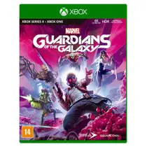
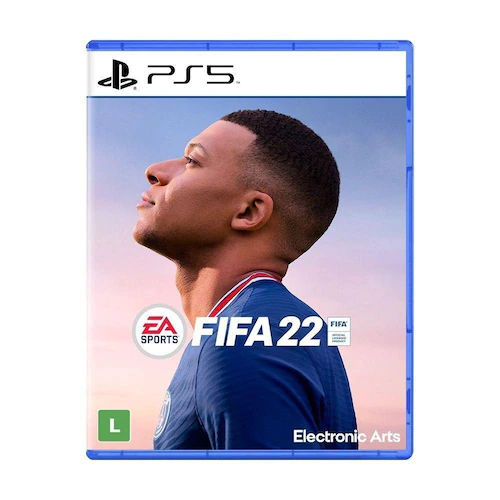

Sobre a Rebimboca Games

A Rebimboca Games surgiu para trazer novidades aos gamers de todas as idades, buscamos sempre trazer o melhor atendimento e sua satisfação é o nosso maior objetivo.
Trazemos o que há de mais novo no mundo dos games para divertir você e seus amigos.
Conte com nossos preços especiais e nos acompanhe nossas novidades.
Nosso estabelecimento
Jogos
Jogo Returnal PS5 Housemarque

Neste jogo de tiro ao estilo rougue, tanto o planeta quanto seu equipamento mudam a cada ciclo, forçando você a adaptar seu estilo de jogo e enfrentar desafios em evolução. Envolva os inimigos em confrontos cheios de balas. Vasculhe a tecnologia alienígena para melhorar suas habilidades. Estabeleça uma conexão pessoal com o planeta e reconheça a história de Selene.
R$ 100,00

Call of Duty: Black Ops 4 - COD BO4 - Mídia Digital - Xbox One - Xbox Series X|S
O game traz um modo multijogador que proporciona uma experiência de combate terrestre muito maquis empolgante e com foco na jogabilidade tática e em dar escolhas ao jogador, então crie sua classe e desbrave os diversos modos presentes no multijogador. Em cod BO4 você terá três experiências do modo "Zumbis", elas são: ix, Voyage of Despair e Blood of the Dead. Que traz uma nova experiência nunca vista, anteriormente, e um novo elenco de personagens.
R$ 100,00
Jogo Horizon Forbidden West PS5 Guerrilla

Explore terras distantes, enfrente máquinas maiores e mais imponentes, e encontre novas tribos incríveis ao retornar para o futuro distante e pós-apocalíptico de Horizon. A terra está morrendo! Tempestades implacáveis e uma praga incontrolável devastam o que sobrou da humanidade enquanto máquinas assustadoras vagam por territórios próximos. A vida na Terra segue rumo à outra extinção, e ninguém sabe o porquê. Cabe a Aloy descobrir os segredos por trás dessas ameaças e restaurar a ordem e equilíbrio ao mundo. Ao longo do caminho, ela reencontrará velhos amigos, forjará alianças com novas facções e descobrirá o legado do passado antigo enquanto tenta se manter um passo à frente de um novo inimigo.
R$ 100,00
Jogo Marvel's Guardiões da Galaxia Xbox Series X, One - Square enix
Você vai se deparar com novos seres poderosos e personagens emblemáticos, todos envolvidos em uma luta pelo destino da galáxia. Chegou a hora de mostrar a todo universo do que você é capaz.
R$ 100,00
Game FIFA 22 - Xbox Series X

Desenvolvido por Football, o EA SPORTS FIFA 22 traz o jogo ainda mais perto da realidade com avanços fundamentais na jogabilidade e uma nova temporada de inovação em todos os modos.
R$ 100,00
Fifa 22 - Ps5
Desenvolvido por Football, o EA SPORTS FIFA 22 traz o jogo ainda mais perto da realidade com avanços fundamentais na jogabilidade e uma nova temporada de inovação em todos os modos.
R$ 100,00